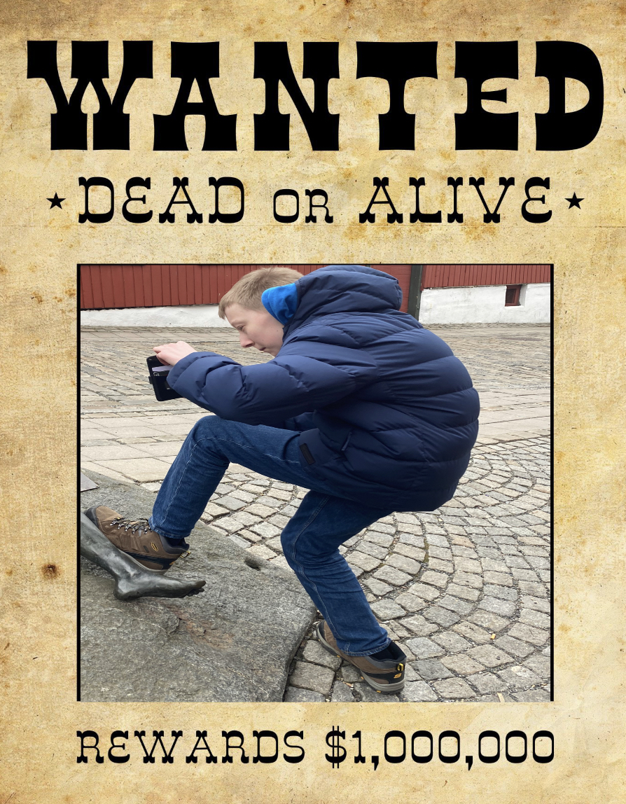

Welcome to our city called Moss
Welcome to Moss a small city in Norway, where residents adore William and his uniquely arched back. It's a cherised tradition for everyone to take turns ridint on his back, symbolizing unity and joy in the community.
With William as beloved figure, Moss embraces acceptance and inclusivity, making it a special place to visit.
Meet William
Meet William, a guy with an arched back like a wheel. Despite his unusual physicque, he`s griddy and loves money.
He's also big fan of avocados, incoporating them into every meal, he likes smoothie with avocados. William is wanted in few countries.